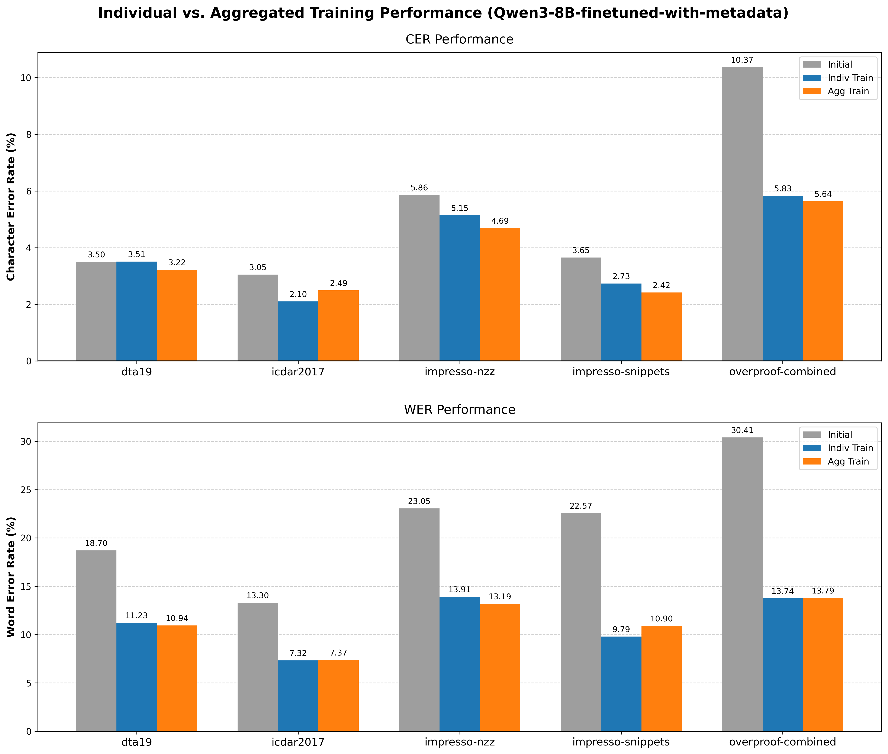
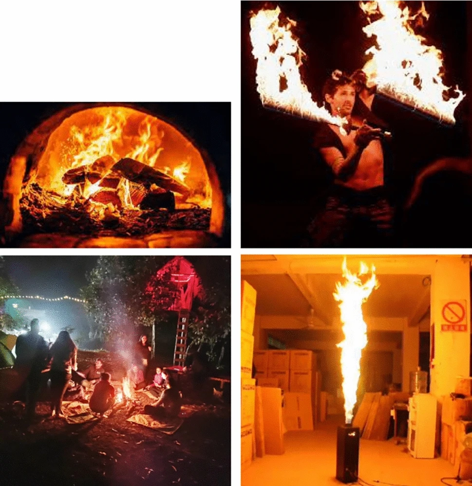

About Me
I am an AI Researcher & Applied AI Engineer specializing in Parameter-Efficient Fine-Tuning (PEFT/QLoRA), compact Vision-Language Models (VLMs), autonomous agentic workflows, and robust evaluation methodologies. I operate at the intersection of empirical scientific inquiry and scalable production engineering, ensuring novel architectures deliver verifiable real-world value.
I graduated with a Double Degree in Information and Communication Technology from La Rochelle University (France) and USTH (Vietnam) in June 2026, graduating as Valedictorian at both institutions. With first-author and co-authored publications across Springer LNCS (ICADL 2026) and Scientific Reports (Nature Portfolio), I have demonstrated track records in designing domain-adaptive conditioning techniques and optimizing edge-constrained multimodal models.
In the Media
-
 SVVN - Tien Phong
SVVN - Tien PhongCông bố quốc tế trên tạp chí Q1 với mô hình AI ‘biết suy luận’ của nam sinh USTH
Tran Minh Duong co-authored a research paper published in Scientific Reports (Nature Portfolio). His research focuses on optimizing VLMs to distinguish dangerous fires from safe heat sources.
-
 USTH News
USTH NewsReview trải nghiệm tại Pháp của nam sinh chương trình song bằng ngành CNTT-TT
Sharing experiences at La Rochelle University, France, covering academic transition, research internship on LLMs at L3i laboratory, and life in France.
Education
BSc in Informatique
La Rochelle University, France
Thesis: "Historical Fidelity in OCR Post-Correction: A Comparative Study of Parameters Efficient Fine-Tuned LLMs and Seq2Seq Models"
Valedictorian (Ranked 1st in cohort) | GPA: 17.05/20 (≈ 3.89/4)
BSc in Information and Communication Technology (Double Degree)
University of Science and Technology of Hanoi (USTH)
University Valedictorian (Ranked 1st of entire intake / graduating class) | GPA: 18.48/20 (≈ 3.89/4). Awarded 100% Merit Scholarship for 2 consecutive years.
Experience
Junior AI Engineer
FPT Software Innovation - Hanoi (Fulltime)
- Built an end-to-end internal developer tool utilizing an agentic workflow with an orchestrator/worker architecture, context engineering, and reusable artifacts to accelerate legacy codebase migration
- Designed enterprise RAG pipelines featuring hybrid search (dense + sparse) fused via Reciprocal Rank Fusion (RRF) and cross-encoder re-ranking for precise knowledge retrieval
- Implemented multi-tool calling agents with structured execution schemas and human-in-the-loop verification gates
- Hardened production AI services against prompt injection vulnerabilities, establishing token lifecycle management and API security protocols
- Authored 50+ modular AI components (Skills, custom MCP servers, and agent workflows) recognized across internal innovation initiatives
AI Researcher
L3i - La Rochelle Université - France (Internship)
- Investigated decoder-only and seq2seq LLM architectures for historical document OCR post-correction
- Optimized Qwen3 and BART via PEFT/QLoRA, reducing OCR error rates by up to 50%
- Formulated metadata-as-context conditioning methodology and constructed qualitative error taxonomy for historical preservation failures
AI Research Assistant
ICTLab - USTH
- Co-authored paper published in Scientific Reports (Nature Portfolio) and released the fire context awareness dataset
- Evaluated compact VLMs (Qwen2.5-VL, InternVL) across custom metrics and inference latency under constrained edge compute
- Fine-tuned VLMs using PEFT/LoRA and quantization, boosting accuracy from 60% to 85%–90%
Publications
Metadata as Prompt Context for Historical OCR Post-Correction
Proceedings of the 28th International Conference on Asia-Pacific Digital Libraries (ICADL 2026), Springer LNCS (Accepted, Oral Presentation Dec 2026; Camera-Ready Oct 2026)
Towards Efficient Context-Aware Classification with Compact VLM Architectures: Indoor Fire Case Study
Scientific Reports (Nature Portfolio, 2026) [Q1 Journal]
Featured Projects

HIPE-OCRepair (ICADL 2026)
Benchmarked Qwen3 & BART across 100k+ multilingual lines. Metadata conditioning achieved up to 50% relative reduction in CER & WER with a 5-class error taxonomy.

ContextFire-VLM (Nature Portfolio)
10k+ labeled multimodal dataset. Compact VLM fine-tuning with PEFT/LoRA and AWQ quantization boosted accuracy from 60% to 88.4% with sub-120ms latency.

Serverless Advanced Hybrid RAG on AWS
Advanced RAG with query rewriting (HyDE), dense search (Pinecone) & knowledge graph (Neo4j). Fused via RRF & cross-encoder reranker (Recall@5: 89.6%) with DeepEval CI/CD testing.
Travel
Our ancestors said "A day's journey provides a basket full of knowledge". So I follow their advice, and received many lessons outside the school. The world is breathtaking beauty. I want to share these moment to who has been patient until now ^^


Friends and Family
Behind every achievement are the people who support, inspire, and keep me grounded. These are the cherished moments with those who mean the most to me.


Want to see the full details of my journey?
Download Full CV